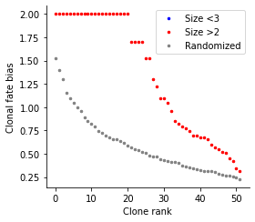

Synthetic data (static barcoding)¶
We simulated a differentiation process over a bifurcation fork. In this simulation, cells are barcoded in the beginning, and the barcodes remain un-changed. In the simulation we resample clones over time, like the experimental design to obtain the hematopoietic dataset or the reprogramming dataset. The dataset has two time points.
[1]:
import cospar as cs
Initialization and Preprocessing¶
Loading data¶
[2]:
adata_orig=cs.datasets.synthetic_bifurcation_static_BC()
try downloading from url
https://kleintools.hms.harvard.edu/tools/downloads/cospar/bifurcation_static_BC_adata_preprocessed.h5ad
... this may take a while but only happens once
[3]:
adata_orig
[3]:
AnnData object with n_obs × n_vars = 2474 × 50
obs: 'time_info', 'state_info'
uns: 'clonal_time_points', 'data_des'
obsm: 'X_clone', 'X_emb', 'X_pca'
[5]:
cs.pl.embedding(adata_orig,color='state_info')
Raw clonal data analysis (without using state information)¶
[6]:
cs.pl.clones_on_manifold(adata_orig,selected_clone_list=[1])
[7]:
plot_time_point='2'
cs.pl.fate_coupling_from_clones(adata_orig,plot_time_point, selected_fates=[], color_bar=True)
[8]:
plot_time_point='2'
cs.pl.barcode_heatmap(adata_orig,plot_time_point, selected_fates=[], color_bar=True)
[9]:
select_fate_cluster='1'
clonal_fate_bias,clone_id=cs.pl.clonal_fate_bias(adata_orig,select_fate_cluster,N_resampling=100)
Current clone id: 0
Current clone id: 5
Current clone id: 10
Current clone id: 15
Current clone id: 20
Current clone id: 25
Current clone id: 30
Current clone id: 35
Current clone id: 40
Current clone id: 45
Current clone id: 50

Transition map inference¶
Transition map from multiple clonal time points.¶
[10]:
use_full_Smatrix=True
noise_threshold=0.2 #
selected_clonal_time_points=['1','2']
adata=cs.tmap.infer_Tmap_from_multitime_clones(adata_orig,selected_clonal_time_points,smooth_array=[10,10,10],
CoSpar_KNN=20,noise_threshold=noise_threshold,demulti_threshold=noise_threshold,
use_full_Smatrix=use_full_Smatrix,use_all_cells=False)
-------Step 1: Select time points---------
--> Clonal cell fraction (day 1-2): 1.0
--> Clonal cell fraction (day 2-1): 1.0
--> Numer of cells that are clonally related -- day 1: 854 and day 2: 1620
Valid clone number 'FOR' post selection 52
Cell number=2474, Clone number=52
-------Step 2: Compute the full Similarity matrix if necessary---------
Compute similarity matrix: computing new; beta=0.1
Smooth round: 1
--> Time elapsed: 0.0065500736236572266
Smooth round: 2
--> Time elapsed: 0.04064488410949707
--> Orignal sparsity=0.18047254911058844, Thresholding
--> Final sparsity=0.16805970451629854
similarity matrix truncated (Smooth round=2): 0.10501980781555176
Smooth round: 3
--> Time elapsed: 0.2107398509979248
--> Orignal sparsity=0.36128591024912937, Thresholding
--> Final sparsity=0.3115755514586951
similarity matrix truncated (Smooth round=3): 0.11839008331298828
Smooth round: 4
--> Time elapsed: 0.28410983085632324
--> Orignal sparsity=0.4542983487444851, Thresholding
--> Final sparsity=0.3801705890003
similarity matrix truncated (Smooth round=4): 0.10097503662109375
Smooth round: 5
--> Time elapsed: 0.2772088050842285
--> Orignal sparsity=0.5090226961858462, Thresholding
--> Final sparsity=0.4313755539420809
similarity matrix truncated (Smooth round=5): 0.11639904975891113
Save the matrix~~~
Smooth round: 6
--> Time elapsed: 0.33049702644348145
--> Orignal sparsity=0.5543067465096992, Thresholding
--> Final sparsity=0.4738424317836788
similarity matrix truncated (Smooth round=6): 0.11284589767456055
Smooth round: 7
--> Time elapsed: 0.38887786865234375
--> Orignal sparsity=0.5961557187474064, Thresholding
--> Final sparsity=0.5110177372564729
similarity matrix truncated (Smooth round=7): 0.11432099342346191
Smooth round: 8
--> Time elapsed: 0.4345111846923828
--> Orignal sparsity=0.6371680186959741, Thresholding
--> Final sparsity=0.543228558414136
similarity matrix truncated (Smooth round=8): 0.12262606620788574
Smooth round: 9
--> Time elapsed: 0.40210509300231934
--> Orignal sparsity=0.673204887826116, Thresholding
--> Final sparsity=0.5714666157790415
similarity matrix truncated (Smooth round=9): 0.11144113540649414
Smooth round: 10
--> Time elapsed: 0.4940023422241211
--> Orignal sparsity=0.7017969910513152, Thresholding
--> Final sparsity=0.5978522633774439
similarity matrix truncated (Smooth round=10): 0.11046934127807617
Save the matrix~~~
-------Step 3: Optimize the transition map recursively---------
---------Compute the transition map-----------
Compute similarity matrix: load existing data
--> Time elapsed: 0.011964082717895508
--> Time elapsed: 0.0265657901763916
--> Time elapsed: 0.008074045181274414
--> Time elapsed: 0.025511980056762695
Compute similarity matrix: load existing data
--> Time elapsed: 0.010082006454467773
--> Time elapsed: 0.02631998062133789
--> Time elapsed: 0.008765935897827148
--> Time elapsed: 0.026265859603881836
Compute similarity matrix: load existing data
--> Time elapsed: 0.00886988639831543
--> Time elapsed: 0.02891993522644043
--> Time elapsed: 0.013264179229736328
--> Time elapsed: 0.04337882995605469
Current iteration: 0
Use smooth_round=10
Clone normalization
--> Relative time point pair index: 0
--> Clone id: 0
Start to smooth the refined clonal map
Phase I: time elapsed -- 0.0379939079284668
Phase II: time elapsed -- 0.05436587333679199
Current iteration: 1
Use smooth_round=10
Clone normalization
--> Relative time point pair index: 0
--> Clone id: 0
Start to smooth the refined clonal map
Phase I: time elapsed -- 0.011701107025146484
Phase II: time elapsed -- 0.022777080535888672
Current iteration: 2
Use smooth_round=10
Clone normalization
--> Relative time point pair index: 0
--> Clone id: 0
Start to smooth the refined clonal map
Phase I: time elapsed -- 0.018460988998413086
Phase II: time elapsed -- 0.0346832275390625
No need for Final Smooth (i.e., clonally states are the final state space for Tmap)
----Demultiplexed transition map----
Clone normalization
--> Relative time point pair index: 0
--> Clone id: 0
-----------Total used time: 11.65038275718689 s ------------

Generate demultiplexed map within each clone (Optional, as this map has been generated already)
[11]:
run_demultiplex=False
if run_demultiplex:
demulti_threshold=0.2 # This threshold should be smaller, ass the map has been further smoothed to expand to more states.
cs.tmap.infer_intraclone_Tmap(adata,demulti_threshold=demulti_threshold)
Clone normalization
--> Relative time point pair index: 0
--> Clone id: 0
[12]:
cs.pl.fate_bias_from_binary_competition(adata,selected_fates=['0','1'],used_map_name='transition_map',
plot_time_points=[],plot_target_state=False,map_backwards=True,sum_fate_prob_thresh=0)
Transition map from a single clonal time point¶
[13]:
initial_time_points=['1']
clonal_time_point='2'
adata=cs.tmap.infer_Tmap_from_one_time_clones(adata_orig,initial_time_points,clonal_time_point,
Clone_update_iter_N=1,initialize_method='OT',smooth_array=[10,10,10],
noise_threshold=0.2,compute_new=False)
-------------------------------New Start--------------------------------------------------
Current time point: 1
-----------Pre-processing and sub-sampling cells------------
----------------
Step 1: Use OT method for initialization
Compute new shortest path distance matrix
--> Chosen mode is distances
Finishing computing shortest-path distance, used time 3.174316883087158
Compute new custon OT matrix
OT solver: duality_gap
Finishing computing optial transport map, used time 3.236064910888672
----------------
Step 2: Jointly optimize the transition map and the initial clonal states!
Joint optimization that consider possibility of clonal overlap: v2
--> original clone shape: (2474, 52)
--> After excluding zero-sized clones at t2: (2474, 52)
Sort clones by size (small to large)
Infer the number of initial cells to extract for each clone in advance
--> Inferring early clonal states: current clone id 0
---------Compute the transition map-----------
Compute similarity matrix: computing new; beta=0.1
Smooth round: 1
--> Time elapsed: 0.005304098129272461
Smooth round: 2
--> Time elapsed: 0.037136077880859375
--> Orignal sparsity=0.18047254911058844, Thresholding
--> Final sparsity=0.16805970451629854
similarity matrix truncated (Smooth round=2): 0.0864109992980957
Smooth round: 3
--> Time elapsed: 0.17737793922424316
--> Orignal sparsity=0.36128591024912937, Thresholding
--> Final sparsity=0.3115755514586951
similarity matrix truncated (Smooth round=3): 0.10857129096984863
Smooth round: 4
--> Time elapsed: 0.2745969295501709
--> Orignal sparsity=0.4542983487444851, Thresholding
--> Final sparsity=0.3801705890003
similarity matrix truncated (Smooth round=4): 0.10771417617797852
Smooth round: 5
--> Time elapsed: 0.32264113426208496
--> Orignal sparsity=0.5090226961858462, Thresholding
--> Final sparsity=0.4313755539420809
similarity matrix truncated (Smooth round=5): 0.11082911491394043
Save the matrix~~~
Smooth round: 6
--> Time elapsed: 0.33100080490112305
--> Orignal sparsity=0.5543067465096992, Thresholding
--> Final sparsity=0.4738424317836788
similarity matrix truncated (Smooth round=6): 0.11528491973876953
Smooth round: 7
--> Time elapsed: 0.3826298713684082
--> Orignal sparsity=0.5961557187474064, Thresholding
--> Final sparsity=0.5110177372564729
similarity matrix truncated (Smooth round=7): 0.11359381675720215
Smooth round: 8
--> Time elapsed: 0.44081902503967285
--> Orignal sparsity=0.6371680186959741, Thresholding
--> Final sparsity=0.543228558414136
similarity matrix truncated (Smooth round=8): 0.1231377124786377
Smooth round: 9
--> Time elapsed: 0.42861294746398926
--> Orignal sparsity=0.673204887826116, Thresholding
--> Final sparsity=0.5714666157790415
similarity matrix truncated (Smooth round=9): 0.11669087409973145
Smooth round: 10
--> Time elapsed: 0.5159029960632324
--> Orignal sparsity=0.7017969910513152, Thresholding
--> Final sparsity=0.5978522633774439
similarity matrix truncated (Smooth round=10): 0.10596299171447754
Save the matrix~~~
--> Time elapsed: 0.015125036239624023
--> Time elapsed: 0.029886960983276367
--> Time elapsed: 0.010583639144897461
--> Time elapsed: 0.028316974639892578
Compute similarity matrix: load existing data
--> Time elapsed: 0.008720874786376953
--> Time elapsed: 0.0272371768951416
--> Time elapsed: 0.010474920272827148
--> Time elapsed: 0.02804088592529297
Compute similarity matrix: load existing data
--> Time elapsed: 0.006906747817993164
--> Time elapsed: 0.024413108825683594
--> Time elapsed: 0.00768589973449707
--> Time elapsed: 0.02739882469177246
Current iteration: 0
Use smooth_round=10
Clone normalization
--> Relative time point pair index: 0
--> Clone id: 0
Start to smooth the refined clonal map
Phase I: time elapsed -- 0.03129911422729492
Phase II: time elapsed -- 0.05033588409423828
Current iteration: 1
Use smooth_round=10
Clone normalization
--> Relative time point pair index: 0
--> Clone id: 0
Start to smooth the refined clonal map
Phase I: time elapsed -- 0.013505697250366211
Phase II: time elapsed -- 0.03381180763244629
Current iteration: 2
Use smooth_round=10
Clone normalization
--> Relative time point pair index: 0
--> Clone id: 0
Start to smooth the refined clonal map
Phase I: time elapsed -- 0.01205134391784668
Phase II: time elapsed -- 0.031478166580200195
No need for Final Smooth (i.e., clonally states are the final state space for Tmap)
----Demultiplexed transition map----
Clone normalization
--> Relative time point pair index: 0
--> Clone id: 0
Finishing computing transport map from CoSpar using inferred clonal data, used time 8.720440149307251
-----------Total used time: 15.300827264785767 s ------------
[14]:
cs.pl.fate_bias_from_binary_competition(adata,selected_fates=['0','1'],used_map_name='transition_map',
plot_time_points=[],plot_target_state=False,map_backwards=True,sum_fate_prob_thresh=0)
Transition amp from only the clonal information¶
[15]:
cs.tmap.infer_Tmap_from_clonal_info_alone(adata)
cs.pl.fate_bias_from_binary_competition(adata,selected_fates=['0','1'],used_map_name='clonal_transition_map',
plot_time_points=[],plot_target_state=False,map_backwards=True,sum_fate_prob_thresh=0)